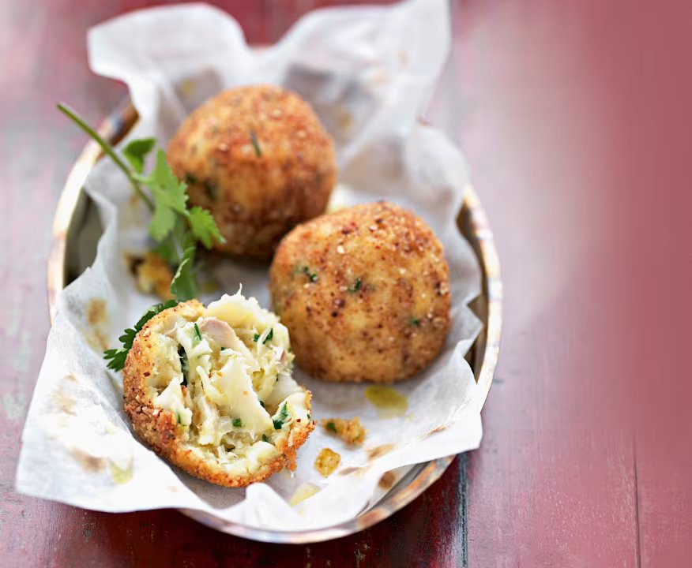

Croquettes de poisson à l'oignon
Ingrédients
4×
- 40 g de pain de mie
- 30 g de lait
- 80 g d'oignon
- 1 jaune d'oeuf
- 1 bouquet de ciboulette
- sel
- poivre
- 350 g de filet de poisson cuit
- 1 oeuf
- 40 g de chapelure
- huile d'olive

Préparation
Étape 1
Tremper 40 g de pain de mie émietté dans 30 g de lait 5min.
Étape 2
Mettre 80 g d'oignon dans le bol et mixer 5 sec/vitesse 5. Ajouter le pain, 1 jaune d'oeuf, 1 bouquet de ciboulette en tronçons, sel et poivre. Mixer 10 sec/vitesse 5.
Étape 3
Ajouter 350 g de filet de poisson cuit émietté et mixer 5 sec/vitesse 5.
Étape 4
Former une douzaine de boulettes, les paner dans 1 oeuf battu puis dans 40 g de chapelure poivrée.
Étape 5
Dorer 5 à 6min à la poêle dans de l’huile d'olive.
Conseils
- Chapelure maison : mixer du pain sec 20 sec/vitesse 7.
Résumé
40 g de pain de mie
30 g de lait
Tremper
80 g d'oignon
1 jaune d'oeuf
1 bouquet de ciboulette
sel
poivre
mixer 5 sec/vitesse 5 Mixer 10 sec/vitesse 5
350 g de filet de poisson cuit
mixer 5 sec/vitesse 5
1 oeuf
40 g de chapelure
Former paner
huile d'olive
Dorer